Related question: Q3 · multiplexing several departments onto one link
Physical Layer: Signals, Impairments and Delay
Analog vs. digital, frequency and period, bit rate and bit interval, the three impairments (attenuation, distortion, noise), and the four delays: propagation, transmission, queuing and processing. This is the calculation-heavy deck: every formula here appears in Tutorial 3 (the solved Physical Layer Activity), and the worked answers are linked on each slide.
How to read this page
Every original slide is shown unchanged. Yellow marks on a slide point to a numbered note: hover or tap a mark to jump to its note, and hover a note to see its marks. Questions tagged Past exam appeared on a real paper; Prediction questions are likely angles, not confirmed.
All 35 slides
- 1 Physical Layer
- 2 Chapter 2: Outline
- 3 Physical Layer
- 4 Signals: data must become electromagnetic signals
- 5 A Transmission System
- 6 Analog and Digital
- 7 Comparison of analog and digital signals (Figure 2.2)
- 8 Note: periodic analog, aperiodic digital
- 9 Note: frequency
- 10 Note: frequency and period
- 11 Example
- 12 Example
- 13 Simple and composite signals
- 14 Digital Signals
- 15 Two digital signals, one with two and one with four bit-levels
- 16 Bit rate and bit interval
- 17 Example: bit interval
- 18 Advantages of Digital Transmission
- 19 Signal corruption
- 20 Transmission Impairments
- 21 Attenuation
- 22 Distortion
- 23 Noise
- 24 Performance: propagation time and speed
- 25 Propagation Time
- 26 Other Physical layer definitions – Transmission Time
- 27 Example
- 28 Example (continued)
- 29 Example
- 30 Example (continued)
- 31 Example: a satellite link
- 32 Bandwidth-delay product (Figure 2.7)
- 33 Filling the link with bits for case 1
- 34 Filling the link with bits in case 2
- 35 Other Physical layer definitions - Wavelength
Physical Layer
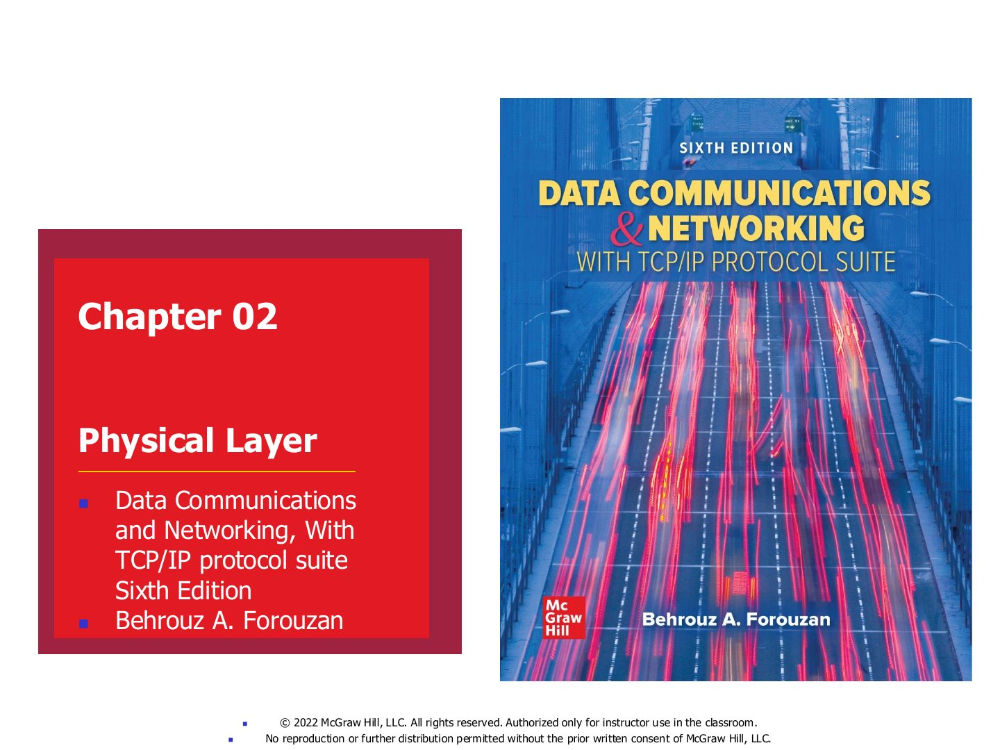
Notes
Signals → analog vs. digital → frequency, period, bit rate → impairments → delays → bandwidth-delay product.
Calculation deck: practise every example with units (ms, µs, Mbps vs. MB).
Tip Formula sheet: f = 1/T · bit interval = 1/bit rate · propagation = distance / speed · transmission = size in bits / bandwidth · BDP = bandwidth × delay · wavelength = speed / f.
Chapter 2: Outline
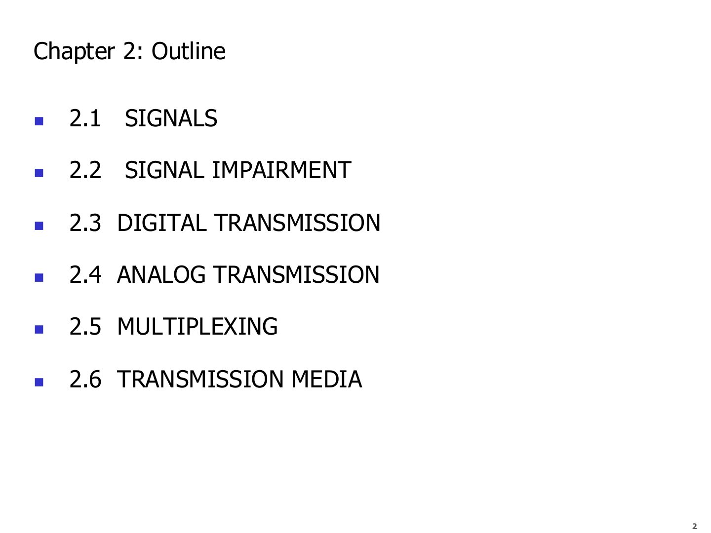
Notes
This part covers 2.1 signals and 2.2 impairment, plus the delay definitions. Media (2.6) is in Part 2.
Exam angle
Physical Layer
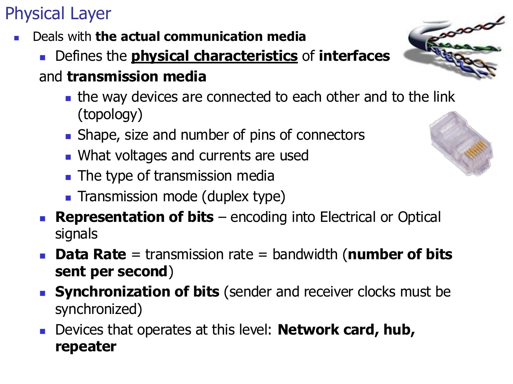
Notes
Same list as Ch 1 Part 2: interfaces, media, connectors, voltages, duplex mode.
Plus: encoding bits into signals, the data rate, and keeping sender and receiver clocks in sync.
Layer-1 devices: network card, hub, repeater.
Seen again Ch 1 Part 2, slide 26: First look at the physical layer
Signals: data must become electromagnetic signals
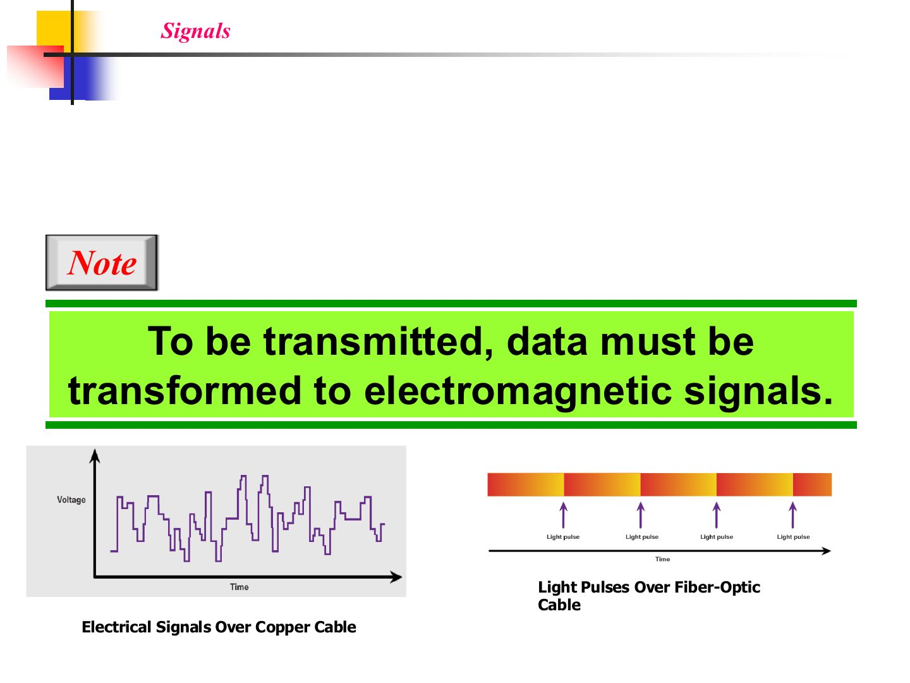
Notes
Data can’t travel as-is: it must be turned into an electromagnetic signal (voltage on copper, light in fiber, radio in air).
Exam angle
To be transmitted, data must be transformed to electromagnetic signals.
Show answer
True
A Transmission System
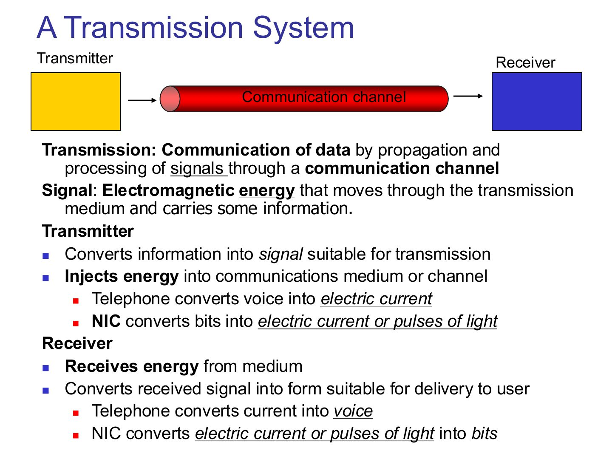
Notes
Signal = electromagnetic energy carrying information.
The NIC is both: transmitter (bits → current/light) and receiver (current/light → bits).
Analog and Digital
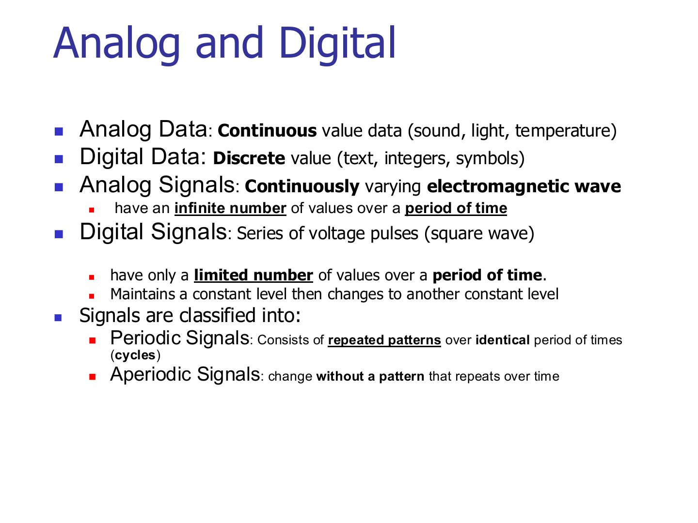
Notes
Analog = infinitely many values (continuous). Digital = a limited set of levels (discrete, square wave).
Periodic = repeats in identical cycles. Aperiodic = no repeating pattern.
Trap Analog/digital is about the VALUES; periodic/aperiodic is about the PATTERN over time. They are separate classifications.
Exam angle
A signal that can have an infinite number of values in a range is:
- Aperiodic
- Analog
- Discrete
- Digital
Show answer
B. Analog
A periodic signal repeats its pattern over identical periods called cycles.
Show answer
True
Comparison of analog and digital signals (Figure 2.2)
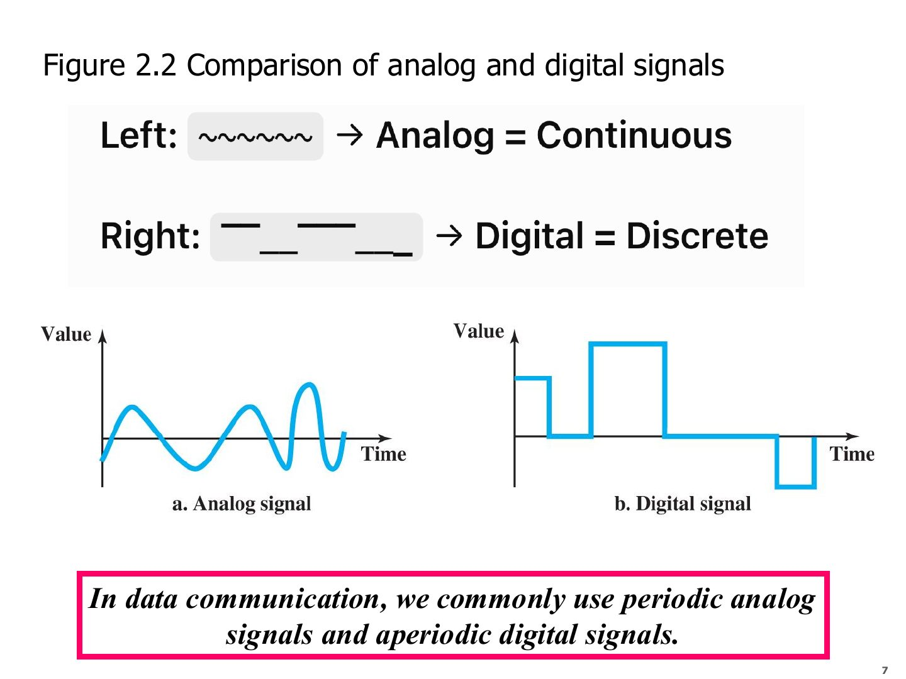
Notes
Rule from the slide: data communication uses PERIODIC ANALOG and APERIODIC DIGITAL signals.
Exam angle
In data communication we commonly use:
- Periodic analog and aperiodic digital signals
- Only aperiodic analog signals
- Aperiodic analog and periodic digital signals
- Only periodic digital signals
Show answer
A. Periodic analog and aperiodic digital signals
Note: periodic analog, aperiodic digital
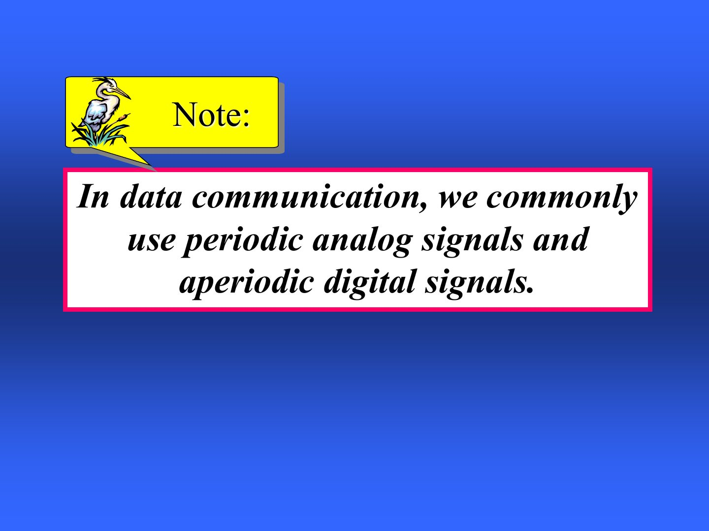
Notes
Repeated on purpose: periodic analog + aperiodic digital is a classic MCQ.
Note: frequency
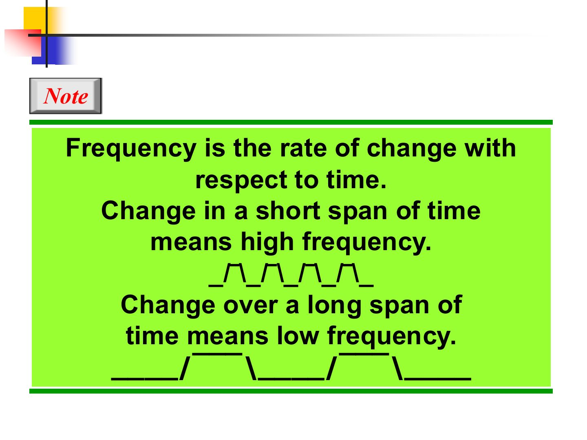
Notes
Fast changes = high frequency. Slow changes = low frequency.
A signal that never changes has frequency 0.
Note: frequency and period
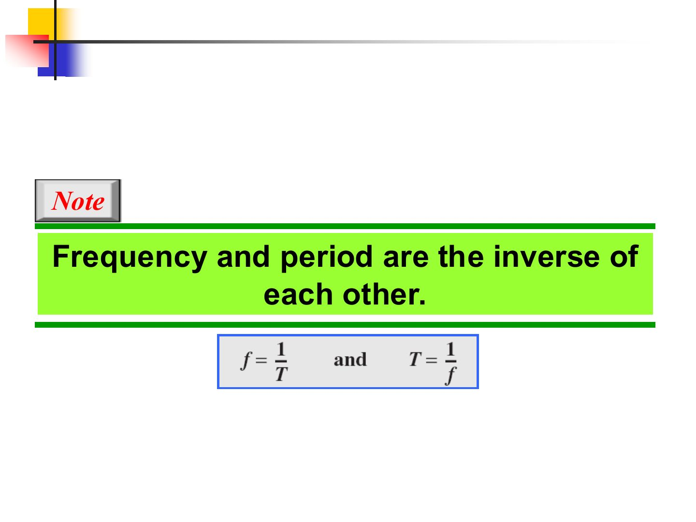
Notes
f in hertz (cycles per second), T in seconds.
Memory trick Units pair up: s ↔ Hz, ms ↔ kHz, µs ↔ MHz, ns ↔ GHz.
Exam angle
Q5 · period of a 5 kHz signal
An analog signal has a frequency of 5 kHz. Its period is:
- 5 ms
- 2 µs
- 200 µs
- 0.2 s
Show answer
C. 200 µs — Tutorial 3, Q5: T = 1/5000 = 0.0002 s = 200 µs.
An analog signal has a frequency of 5 kHz. What is its period, and how are frequency and period related?
Show answer
They are inverses: T = 1/f. T = 1/5000 Hz = 0.0002 s = 200 µs.
Example
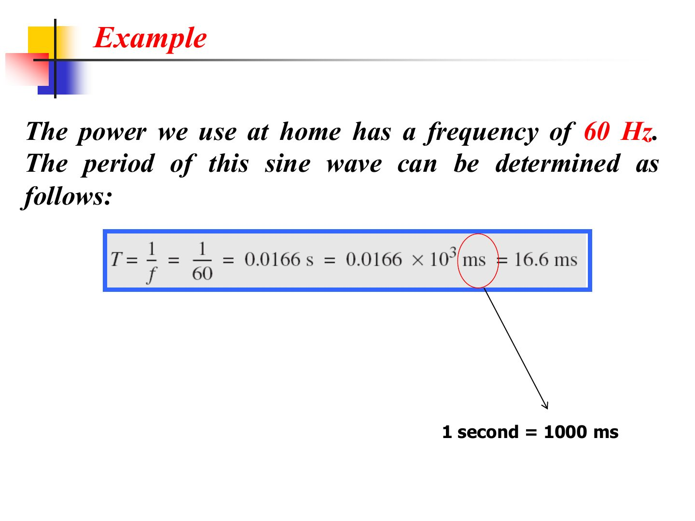
Notes
Multiply seconds by 1000 to get ms.
Example
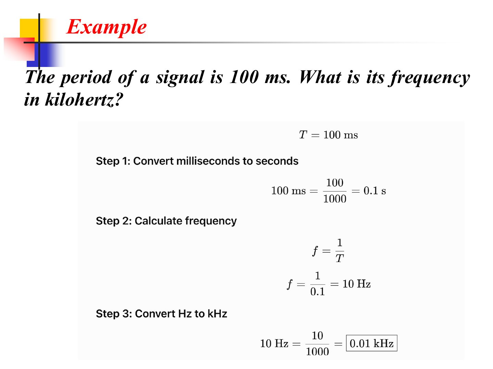
Notes
Always convert to base units (s, Hz) first, then to the unit asked.
Exam angle
A signal has a period of 4 ms. Its frequency is:
- 25 Hz
- 0.25 Hz
- 250 Hz
- 4 kHz
Show answer
C. 250 Hz — 1 / 0.004 s = 250 Hz.
Simple and composite signals
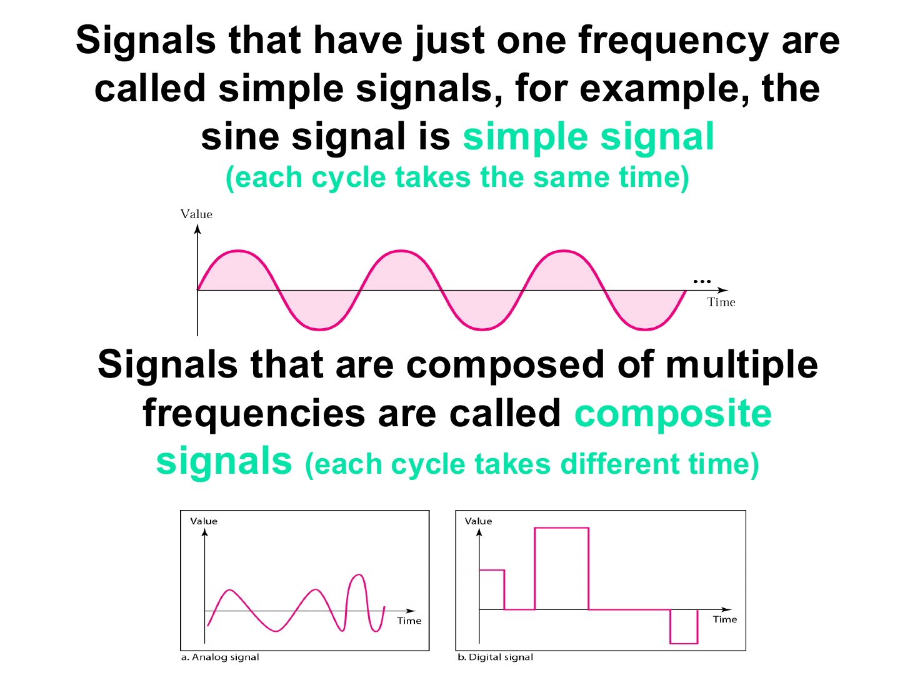
Notes
Simple = one sine wave = one frequency. Composite = many sine waves added together.
Exam angle
Q8 · simple vs. composite signal
What is the key difference between a simple and a composite signal?
Show answer
A simple signal is a single sine wave, so it has one frequency. A composite signal is several sine waves with different frequencies, amplitudes or phases combined.
Digital Signals
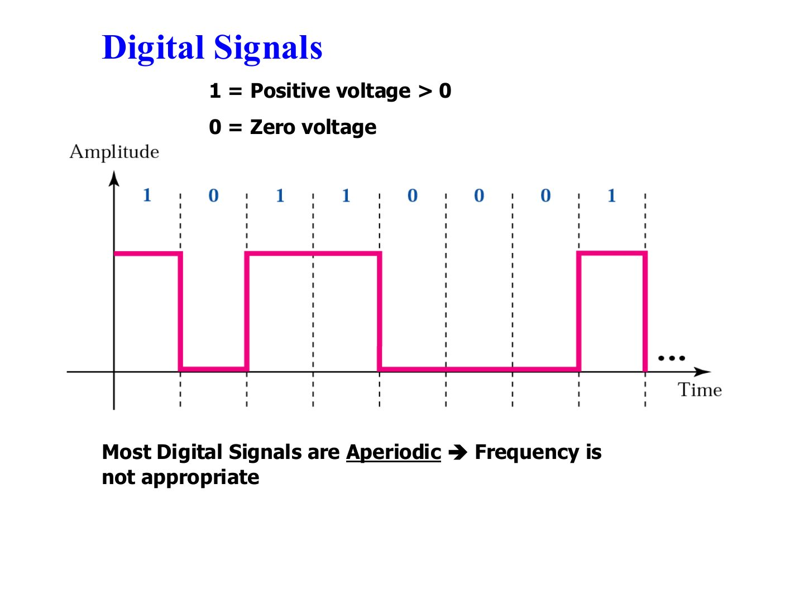
Notes
For digital signals we use bit rate and bit interval instead of frequency and period.
Two digital signals, one with two and one with four bit-levels
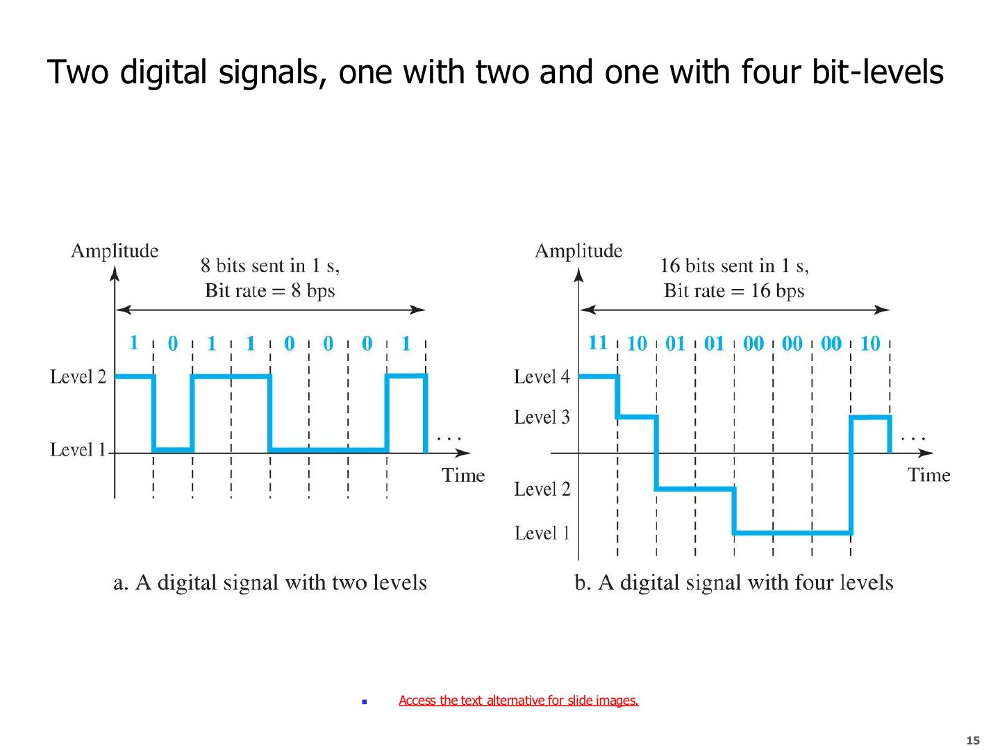
Notes
With L levels, each level carries log₂L bits: 2 levels → 1 bit, 4 levels → 2 bits, so twice the bit rate.
Exam angle
A digital signal has 8 levels. How many bits does each level carry?
- 3
- 4
- 2
- 8
Show answer
A. 3 — log₂8 = 3.
Bit rate and bit interval
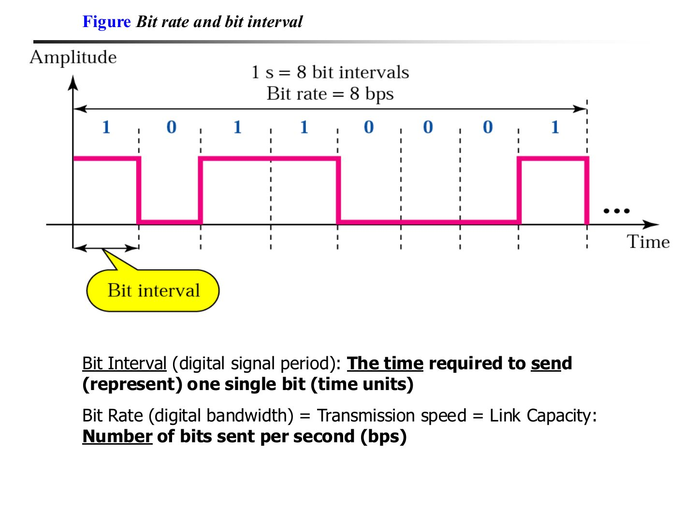
Notes
Bit interval = time for ONE bit. Bit rate = bits per second. Bit rate = 1 / bit interval.
Exam angle
Q1 · bit rate from a 50 µs bit interval
A digital signal has a bit interval of 50 µs. Its bit rate is:
- 200 Kbps
- 2 Kbps
- 20 Kbps
- 50 Kbps
Show answer
C. 20 Kbps — Tutorial 3, Q1: 1 / 0.00005 s = 20,000 bps = 20 Kbps.
Example: bit interval
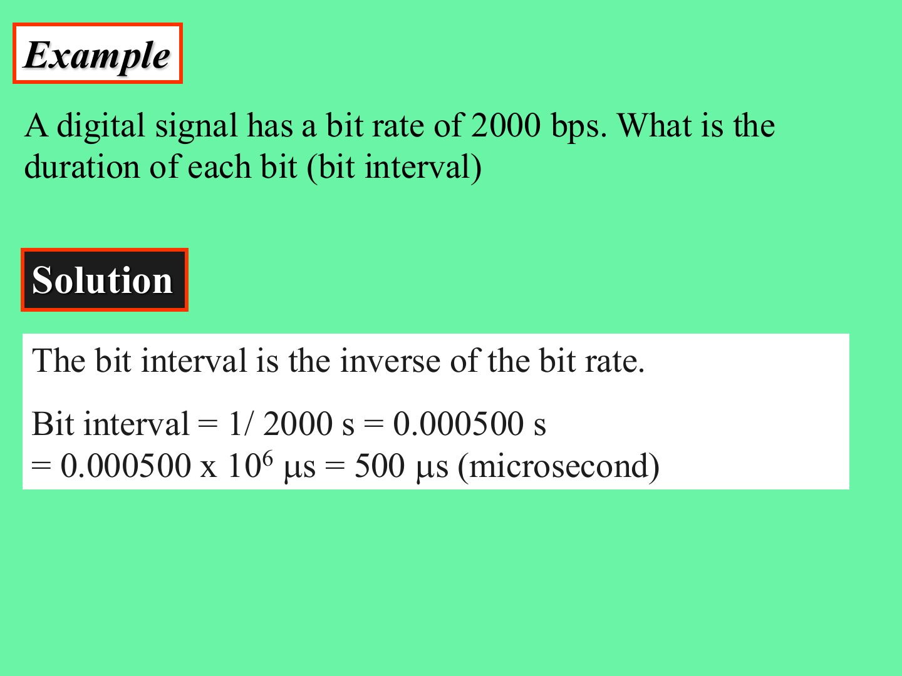
Notes
Seconds × 10⁶ = µs.
Exam angle
A signal has a bit rate of 4000 bps. Each bit lasts:
- 250 µs
- 2.5 ms
- 4 ms
- 25 µs
Show answer
A. 250 µs — 1/4000 = 0.00025 s = 250 µs.
Advantages of Digital Transmission
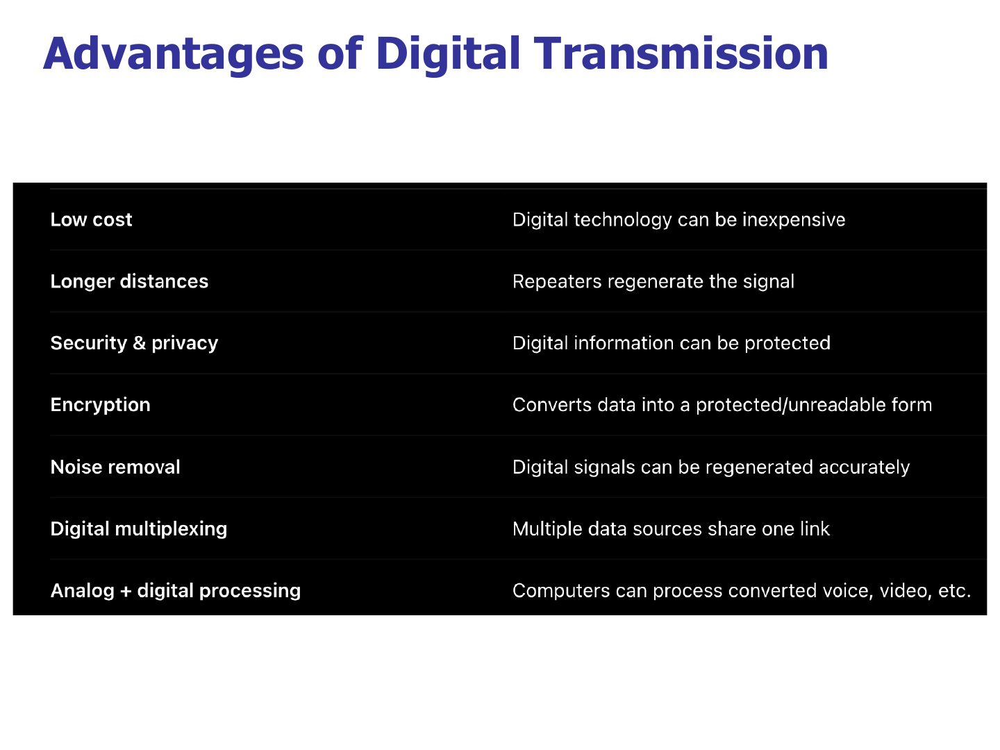
Notes
Digital wins on: cost, distance (repeaters regenerate), security/encryption, noise removal, multiplexing, processing.
Exam angle
Related question: Q2 · what a repeater does
Signal corruption
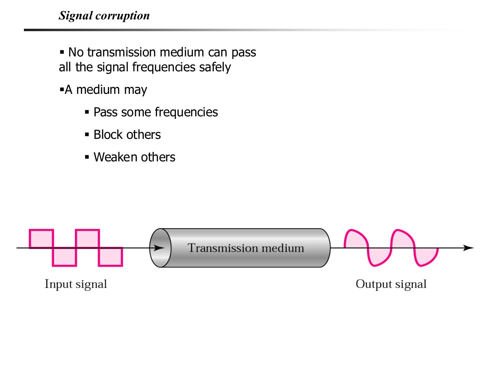
Notes
A medium passes some frequencies, blocks others and weakens others, so the output never equals the input exactly.
Transmission Impairments
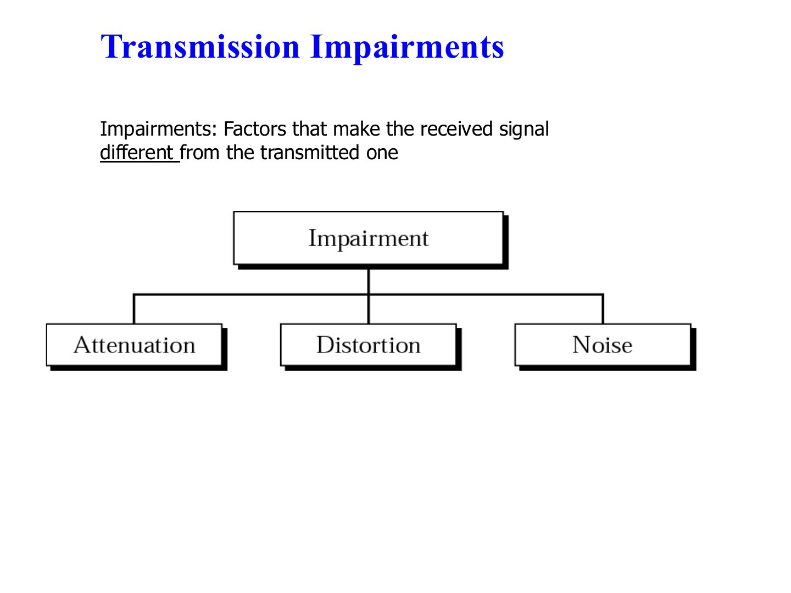
Notes
Three impairments: attenuation, distortion, noise.
Memory trick “ADN”: Attenuation (weaker), Distortion (reshaped), Noise (extra signal).
Exam angle
Which is NOT a transmission impairment?
- Noise
- Multiplexing
- Distortion
- Attenuation
Show answer
B. Multiplexing
Attenuation
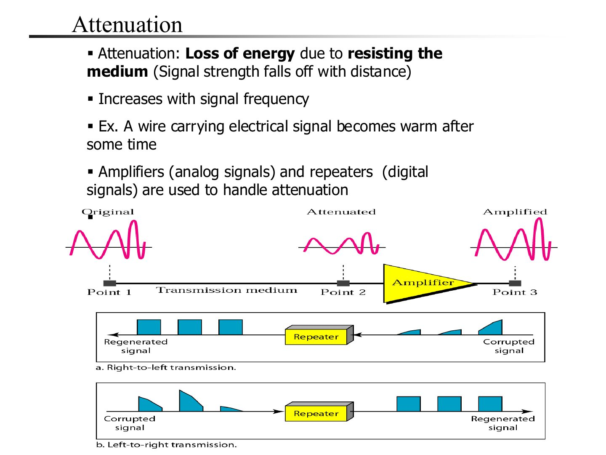
Notes
Attenuation = LOSS OF ENERGY (the wire heats up). Worse with distance and with higher frequency.
Fix: amplifiers for analog, repeaters for digital (they regenerate a clean copy).
Trap Amplifiers boost noise too; repeaters regenerate the original bits.
Exam angle
Q2 · repeater regenerates the weakened signal
Loss of signal energy due to the resistance of the medium is called:
- Attenuation
- Jitter
- Crosstalk
- Distortion
Show answer
A. Attenuation
What does a repeater do and why is it needed in digital transmission?
Show answer
It receives a weakened or distorted digital signal, regenerates it and sends a clean copy on. Signals lose strength over distance (attenuation), so repeaters let digital data travel further without losing its form.
Distortion
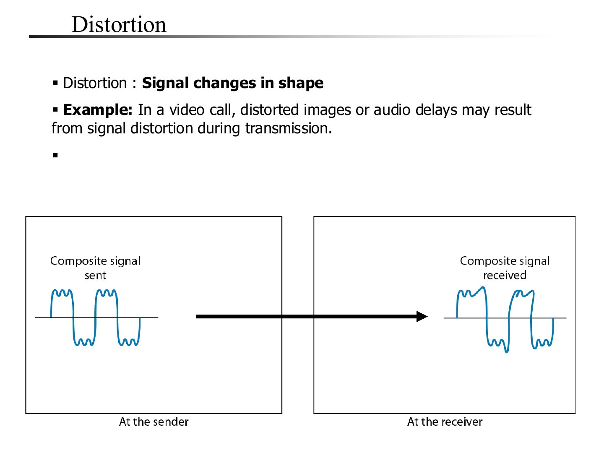
Notes
Distortion = the signal changes SHAPE (its frequency components arrive with different delays). Typical for composite signals.
Exam angle
A composite signal arrives with a changed shape. This impairment is:
- Propagation delay
- Distortion
- Attenuation
- Thermal noise
Show answer
B. Distortion
Noise
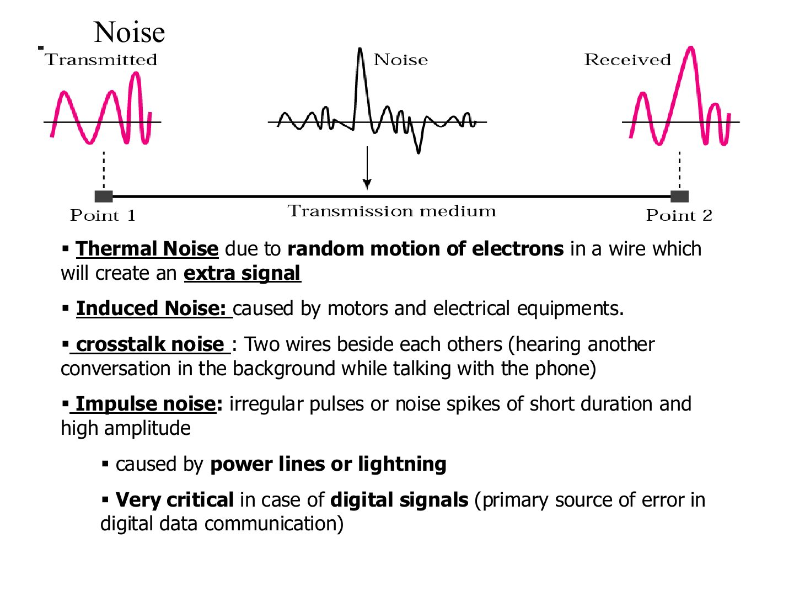
Notes
Thermal: random motion of electrons. Induced: motors and electrical equipment.
Crosstalk: one wire picks up a neighbour’s signal (hearing another call).
Impulse: short high spikes from power lines or lightning; the main error source for digital data.
Memory trick Crosstalk = “cross talk”: someone else’s conversation crossing into yours.
Exam angle
Q6 · background conversation = crosstalk
Q9 · nearby electrical equipment = induced noise
On a phone call you hear a faint conversation from another call. Which impairment is this, and under which category?
Show answer
Crosstalk, which is a kind of noise: a signal from one line leaking into another nearby line.
A long-distance link has many errors because of nearby electrical equipment. Which impairment, and how would you reduce it?
Show answer
Induced noise (electromagnetic interference), a kind of noise. Reduce it with shielded or twisted-pair cable, by moving cables away from the equipment, by using fiber, and with error detection.
Which noise is the primary source of error in digital data communication?
- Impulse noise
- Induced noise
- Crosstalk
- Thermal noise
Show answer
A. Impulse noise
Performance: propagation time and speed
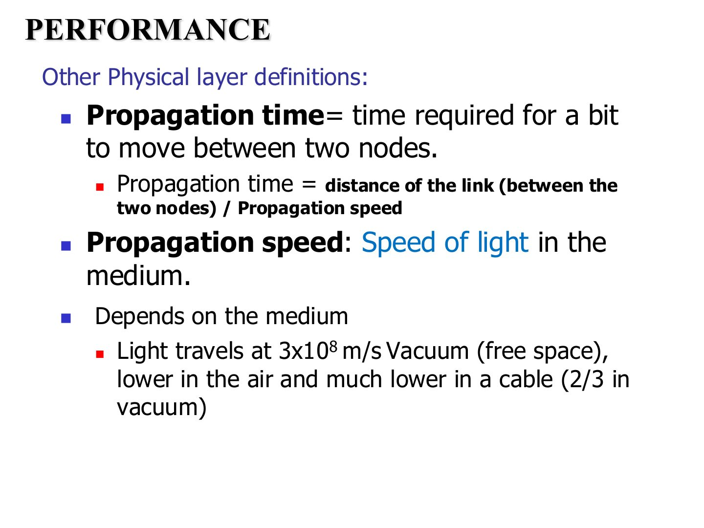
Notes
Propagation time = distance / speed. It does NOT depend on the message size.
Speed: 3 × 10⁸ m/s in vacuum, about 2 × 10⁸ m/s in cable.
Trap Convert km to m before dividing by m/s.
Exam angle
Q4 · 2,000 km at 2 × 10⁸ m/s
Sender and receiver are 2,000 km apart and the signal travels at 2 × 10⁸ m/s. Propagation time?
- 100 ms
- 0.1 ms
- 10 ms
- 1 ms
Show answer
C. 10 ms — Tutorial 3, Q4: 2,000,000 m / 2 × 10⁸ = 0.01 s = 10 ms.
Other Physical layer definitions – Transmission Time
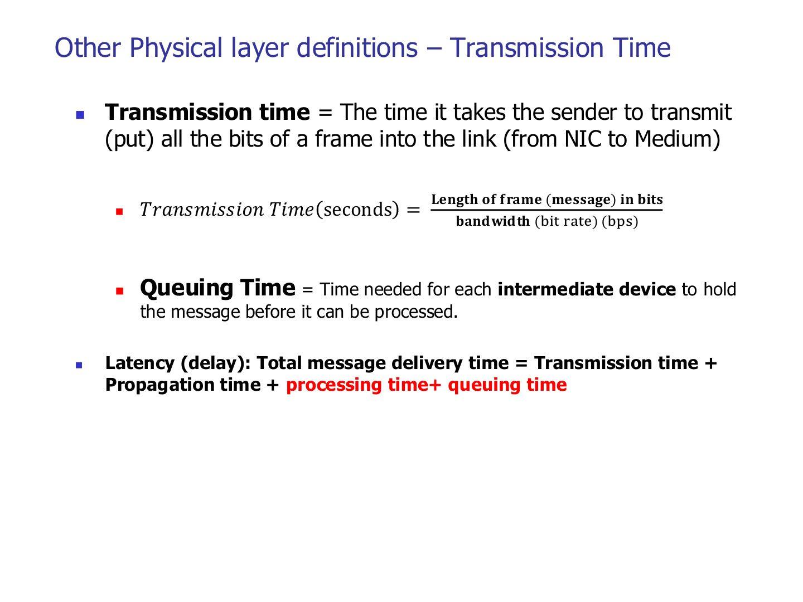
Notes
Transmission time = size / bandwidth: depends on message size, not distance.
Latency = propagation + transmission + queuing + processing.
Memory trick Propagation = how FAR. Transmission = how BIG. Queuing = how BUSY.
Trap 1 MB = 8 Mb: multiply bytes by 8 first.
Exam angle
Q7 · 1 MB over 1 Mbps
A 1 MB file is sent over a 1 Mbps link (ignore propagation). Transmission time?
- 1 s
- 80 s
- 8 s
- 0.125 s
Show answer
C. 8 s — Tutorial 3, Q7: 8 Mb / 1 Mbps = 8 s.
Which delay depends on the size of the message?
- Propagation time
- Transmission time
- Wavelength
- Distance
Show answer
B. Transmission time
List the four components of latency.
Show answer
Propagation time + transmission time + queuing time + processing time.
Example
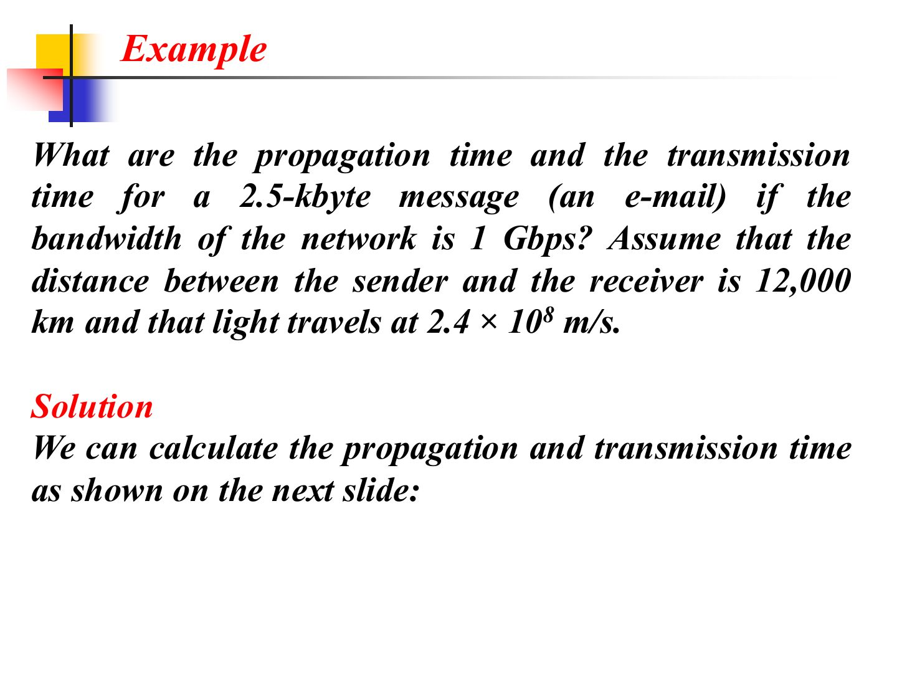
Notes
Short message + fast link: guess which delay wins before you calculate.
Example (continued)
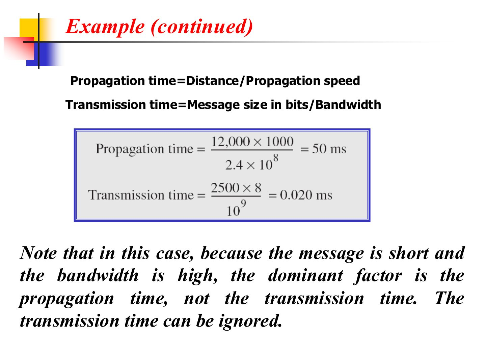
Notes
Small message on a fast link: propagation dominates.
Exam angle
For a short e-mail on a 1 Gbps link across 12,000 km, the transmission time dominates.
Show answer
False — Propagation (50 ms) dominates; transmission is only 0.02 ms.
Example (continued)
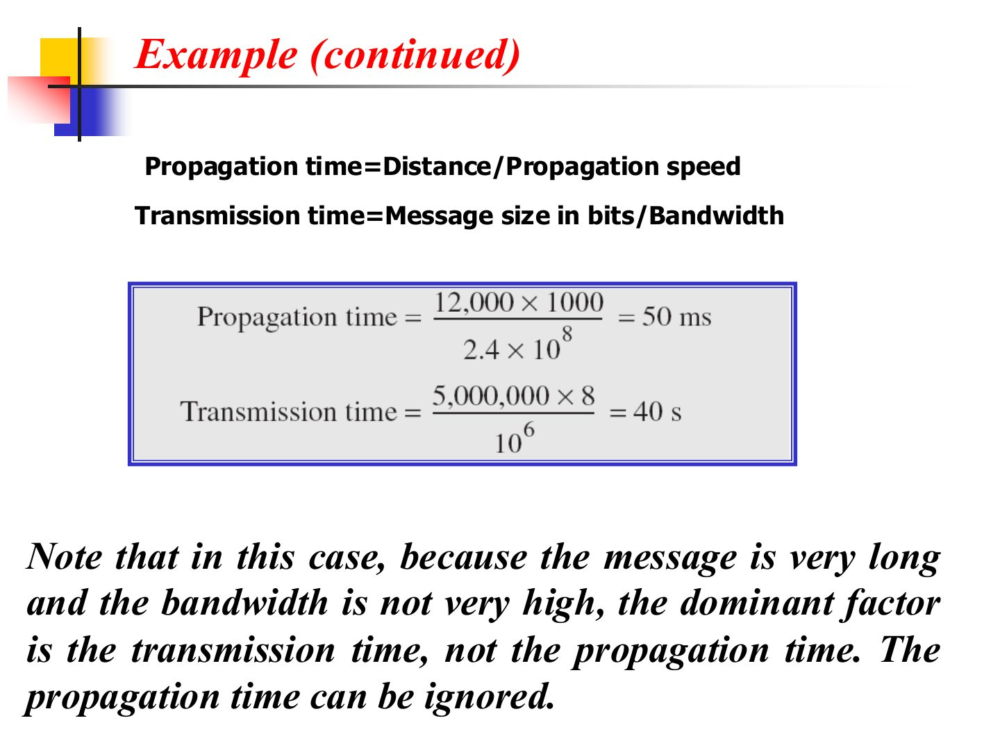
Notes
Same distance, same 50 ms propagation. Big message on a slow link: transmission dominates.
Exam angle
A 5 MB image is sent on a 1 Mbps link over 12,000 km (2.4 × 10⁸ m/s). Which delay dominates?
- Queuing
- Propagation (50 ms)
- They are equal
- Transmission (40 s)
Show answer
D. Transmission (40 s)
Example: a satellite link
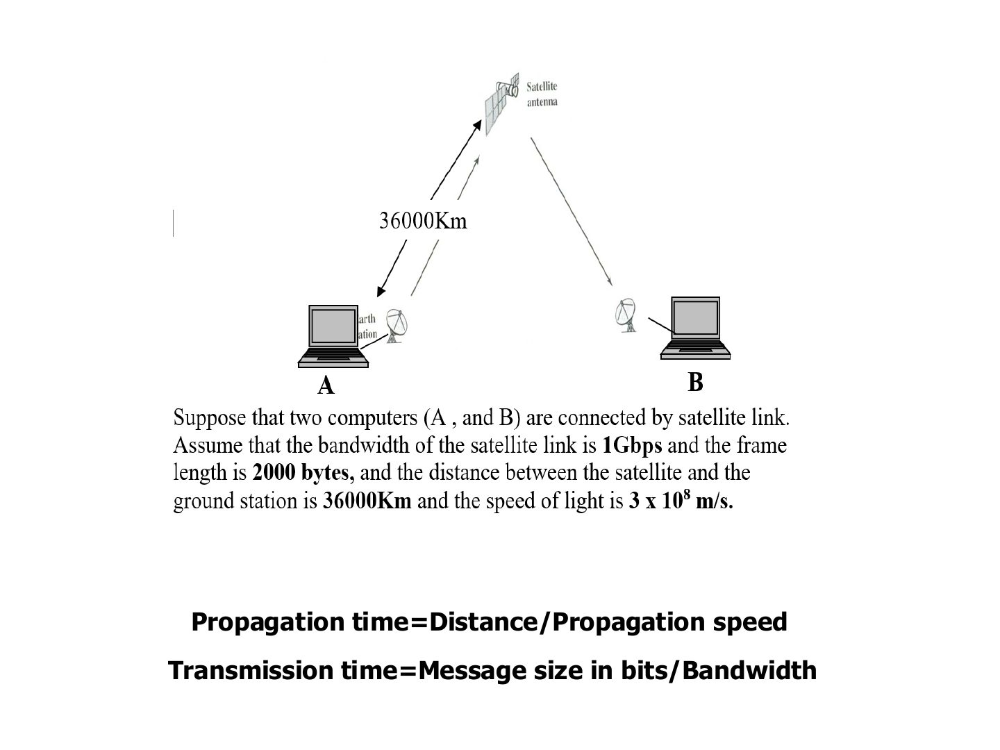
Notes
A → satellite → B is 2 × 36,000 = 72,000 km: propagation = 72 × 10⁶ / 3 × 10⁸ = 0.24 s (0.12 s for one leg).
Transmission = 2000 × 8 / 10⁹ = 16 µs. Propagation dominates by far.
Exam angle
In the satellite example (36,000 km up, 36,000 km down, 3 × 10⁸ m/s), the propagation time from A to B is:
- 0.12 s
- 16 µs
- 0.24 s
- 2.4 s
Show answer
C. 0.24 s — 72,000,000 m / 3 × 10⁸ m/s.
Bandwidth-delay product (Figure 2.7)
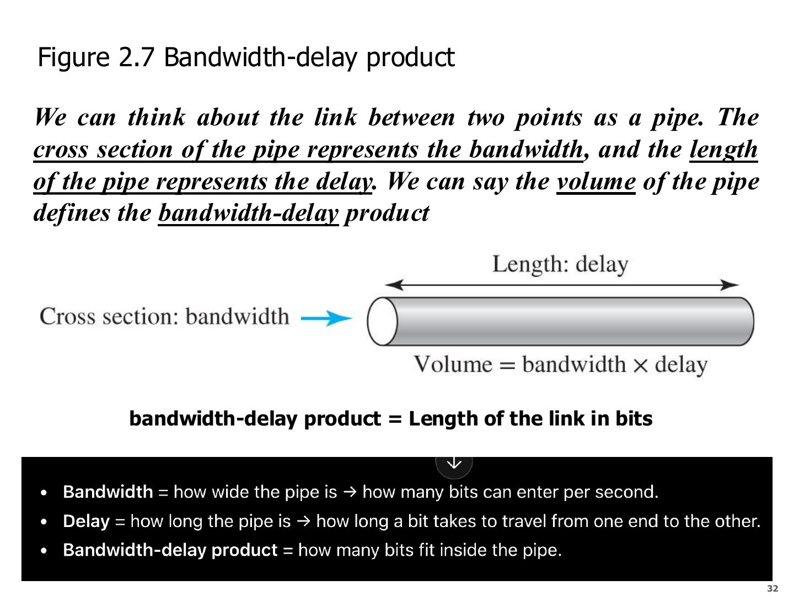
Notes
BDP = bandwidth × delay = how many bits are “in the pipe” at once.
Exam angle
Q10 · 5 bps × 5 s
A link has a bandwidth of 5 bps and a delay of 5 s. Its bandwidth-delay product is:
- 25 bits
- 1 bit
- 10 bits
- 5 bits
Show answer
A. 25 bits — Tutorial 3, Q10.
A 10 Mbps link has a 2 ms delay. How many bits fill the link?
- 20
- 5,000
- 20,000
- 2,000,000
Show answer
C. 20,000 — 10⁷ × 0.002 = 20,000 bits.
Filling the link with bits for case 1
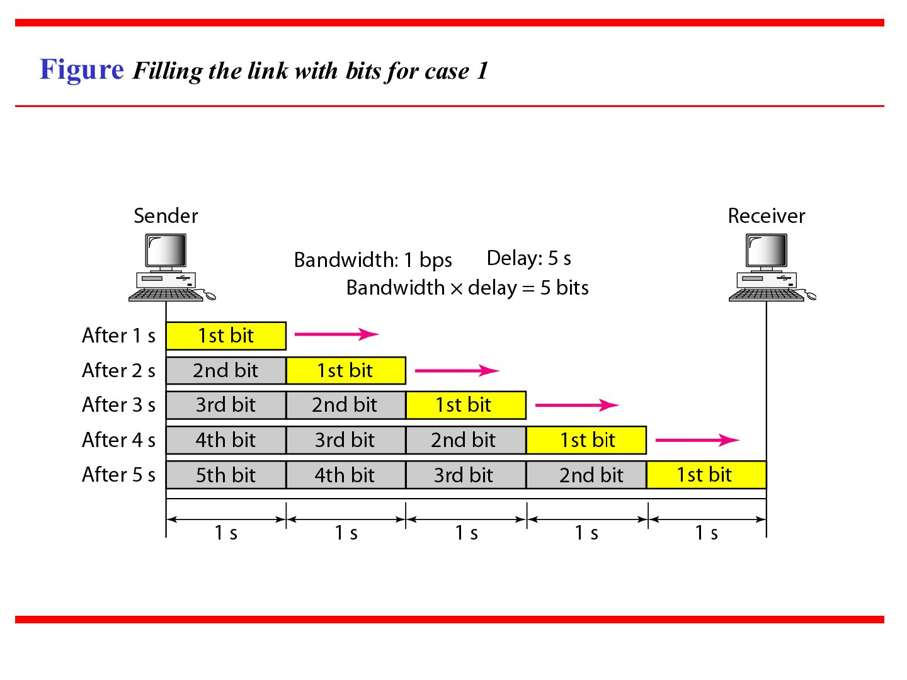
Notes
1 bps × 5 s = 5 bits in the pipe.
Filling the link with bits in case 2
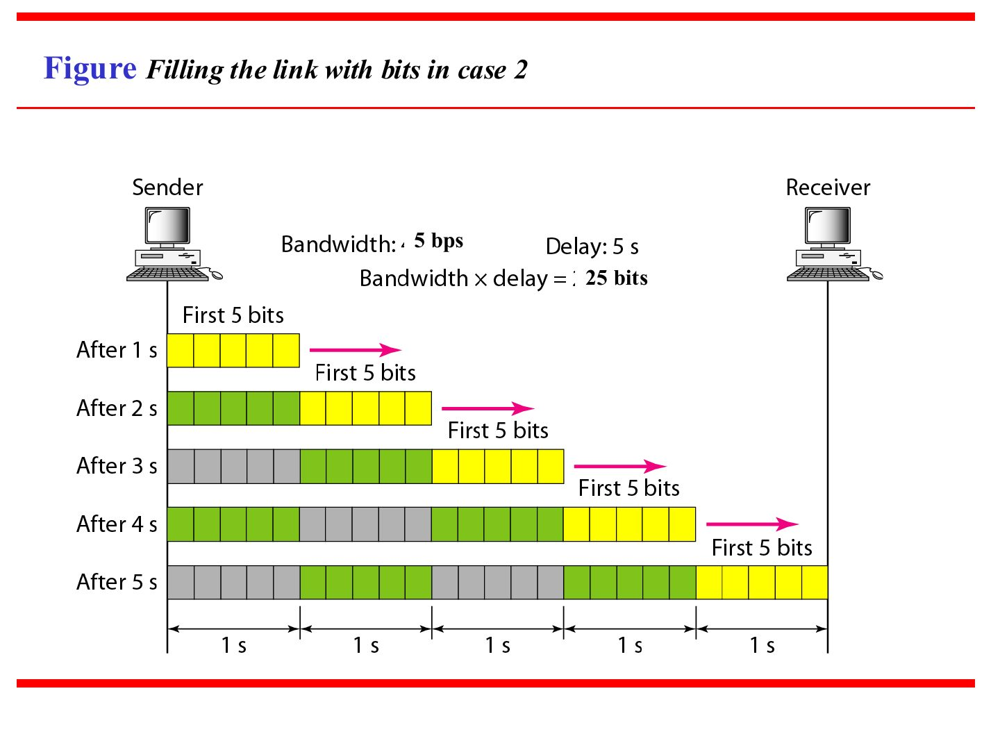
Notes
5 bps × 5 s = 25 bits: the Tutorial 3 numbers.
Exam angle
Q10 · bits in the pipe after 5 s
Other Physical layer definitions - Wavelength
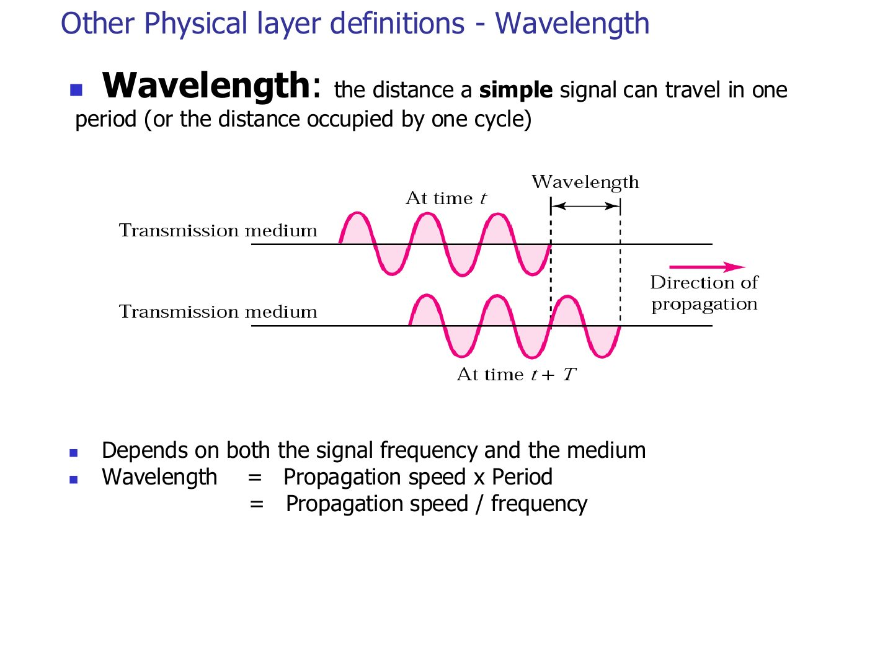
Notes
Wavelength = speed × T = speed / f. It depends on the frequency AND the medium.
Exam angle
A 1 MHz signal travels at 2 × 10⁸ m/s. Its wavelength is:
- 0.5 m
- 200 m
- 2 m
- 20 km
Show answer
B. 200 m — 2 × 10⁸ / 10⁶ = 200 m.